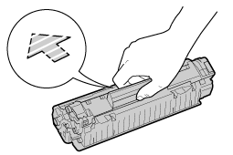

|
Katso myös "Tärkeitä turvaohjeita" ja "Värikasettien säilyttäminen".
|
|
TÄRKEÄÄ
|
||||
|
Tietoja vaihtovärikaseteista
Optimaalisen tulostuslaadun saavuttamiseksi on suositeltavaa käyttää alkuperäisiä Canon-kasetteja, kun värikasetteja vaihdetaan.
Varo väärennettyjä värikasetteja.
Huomaa, että markkinoilla on väärennettyjä Canon-värikasetteja.
Väärennetyn värikasetin käytöstä voi olla seurauksena heikko tulostuslaatu tai laitteen suorituskyky.
Canon ei vastaa toimintahäiriöistä, tapaturmista tai vahingoista, joiden syynä on väärennetyn värikasetin käyttö.
Katso lisätietoja osoitteesta http://www.canon.com/counterfeit.
Pidä värikasetista oikein kiinni.
Kun käsittelet värikasettia, pidä siitä oikein kiinni kuvan mukaisesti, nuolin merkitty puoli ylöspäin. Älä aseta sitä pystyyn tai ylösalaisin.

Älä kosketa sähköliittimiä (A) tai värikasetin muistia (B), äläkä avaa rummun suojasuljinta (C).
Jos sähköliittimiä (A) tai värikasetin muistia (B), kosketaan, voi seurauksena olla kasetin vaurioituminen.
Lisäksi tulostuslaatu saattaa heiketä, jos kosket tai vahingoitat värikasetin sisällä olevaa valoherkkää rumpua. Älä kosketa tai avaa rummun suojasuljinta (C).
  Älä kosketa suurjänniteliitäntöjä (D) tai muita sähköliittimiä (E).
Se saattaa vahingoittaa värikasettia.
 Muita varotoimia
Suojaa värikasetit suoralta auringonvalolta tai voimakkaalta valolta.
Älä yritä purkaa tai muokata värikasettia.
Kondensaatiota (vesipisaroita sisäpuolella tai ulkopuolella) saattaa tiivistyä värikasettiin, joka on tuotu ympäristöön, jossa lämpötila tai kosteus eroaa edellisestä.
Kun viet uuden värikasetin paikkaan, jossa on eri lämpötila tai kosteus, jätä kasetti uudessa paikassa kahdeksi tunniksi suojapussiinsa, jotta se sopeutuu uuteen ympäristöön. Älä jätä yläkantta auki pitkäksi aikaa värikasetin asennuksen jälkeen.
Pidä värikasetti erossa magneettikenttiä tuottavista laitteista, kuten tietokoneista ja näytöistä.
Värikasetti on magneettinen tuote. Pidä värikasetti erossa tuotteista, joita magneettikenttä voi vaurioittaa, kuten levykkeistä ja kiintolevyistä. Muuten seurauksena voi olla tietojen menetys.
|
|
HUOMAUTUS
|
|
Tietoja pakkausmateriaalista
Pakkausmateriaalin muotoa ja sijaintia voidaan muuttaa, ja materiaaleja voidaan lisätä tai poistaa ilman ilmoitusta.
|